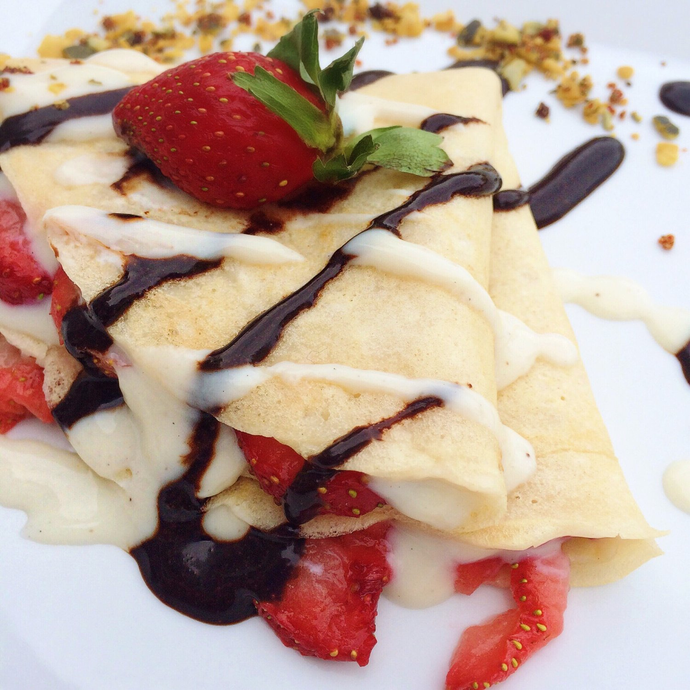
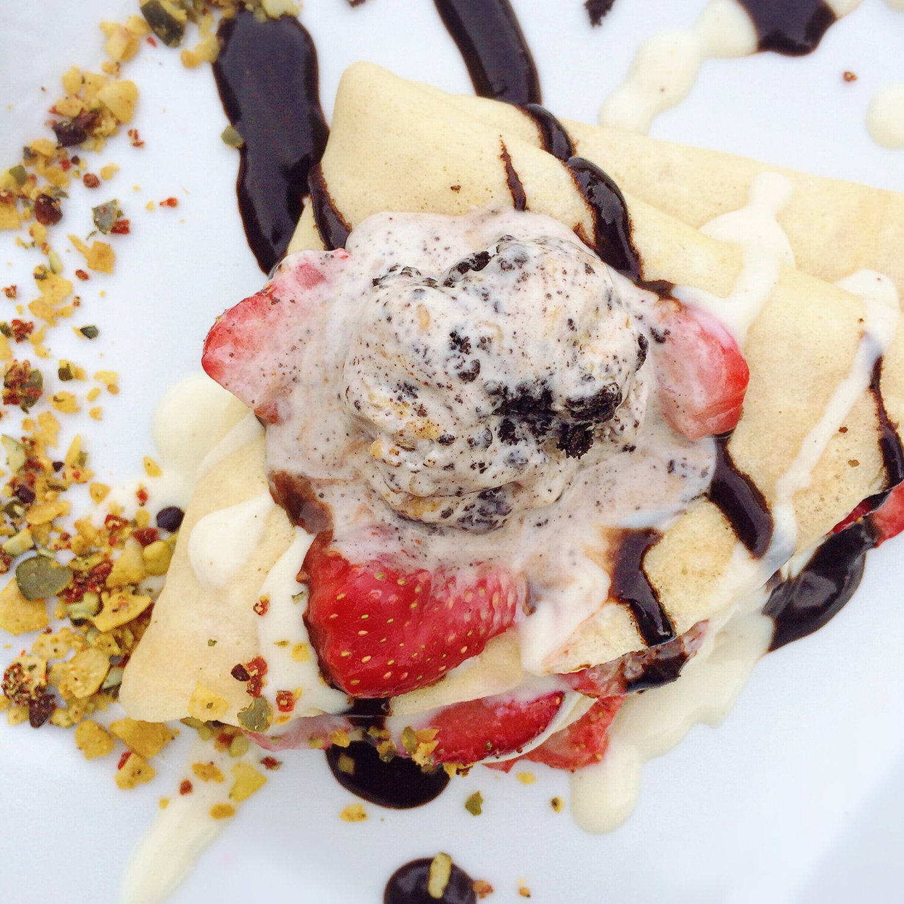
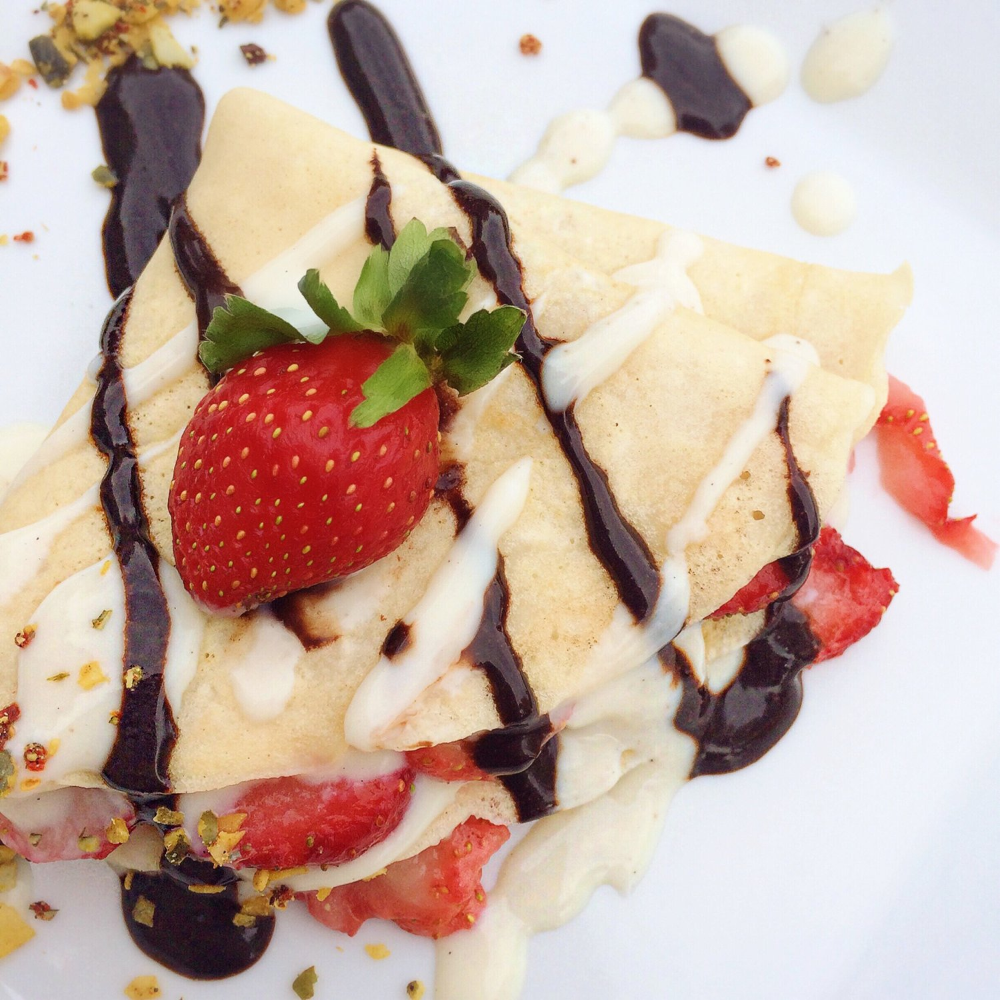

Vegan 3 Ingredient Crepes



These are vegan 3 ingredient crepes! Soft, yet crisp; warm and comforting. These crepes are simple, sugar free, and vegan! Enjoy them for breakfast, or enjoy them for dessert like I did.
Sometimes I look at my plate and hate myself for being outrageously elaborate with my food...but then I take a bite and I'm like oh ok I see you past Kim you were just lookin out for me thanks. I got so into this meal that I even forgot the powdered sugar I wanted to add on top D; oh well I suppose. I topped mine with strawberries, dairy free vanilla yogurt, chocolate stevia syrup, and sprinkles of blend co mix. I even added some non-dairy ben & jerry's ehehehe.
These couldn't have been any more perfect. I used to make protein crepes all the time before I went vegan.. but they were more fluffy and cakey than true crepes are. These are most true to real crepes you'd find in a restaurant - extremely thin yet soft...yet crisp?? It's weird I don't understand crepes. I NEED A CREPE MASTER TO EXPLAIN.
All I know is that dey gooood. Try out these vegan 3 ingredient crepes for the easiest breakfast you'll ever make.
Vegan 3 Ingredient Crepes
Serves: 1
-
1/4 cup all purpose flour
-
1/4 cup almond milk
-
1/2 tbsp melted coconut oil
-
1 stevia packet
-
dash of vanilla extract
Mix all of your ingredients in a small bowl. When adding the almond milk, slowly mix it in so that no clumps form in the process. Once evenly mixed, place in the fridge at least 15 minutes. You could use vegan butter instead of coconut oil if you want. Tip: don't try use gluten free flour because it comes out awful, I've tried.
Spray a large pan with nonstick spray and pour in the crepe batter. Thinly spread it so it fully coats the pan. Cook the crepe under a low heat until lightly browned. Flip and cook just 1 more minute, then remove and eat with your favorite toppings!